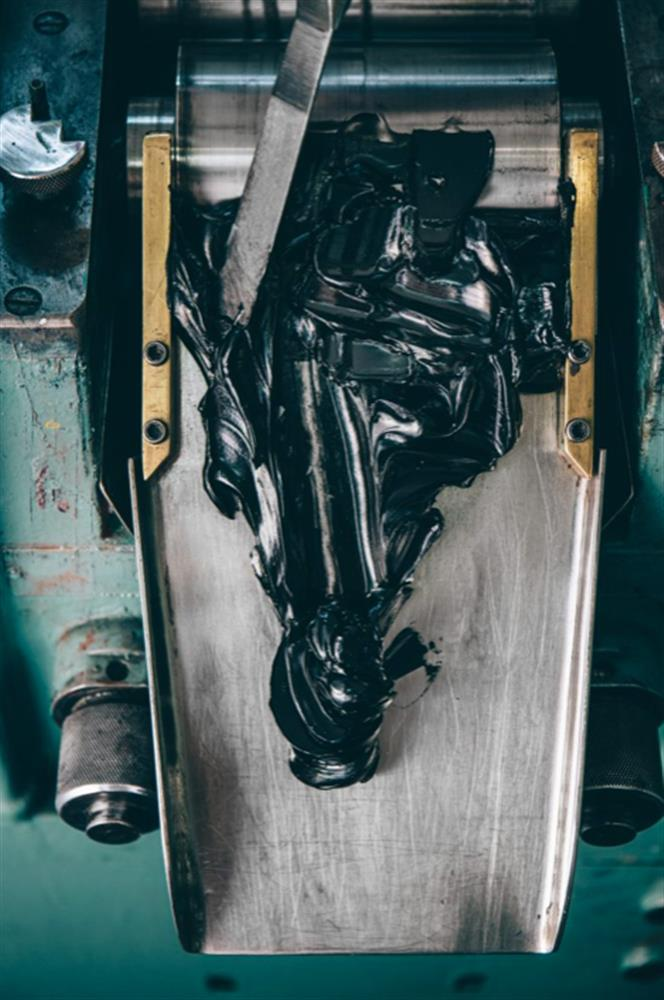
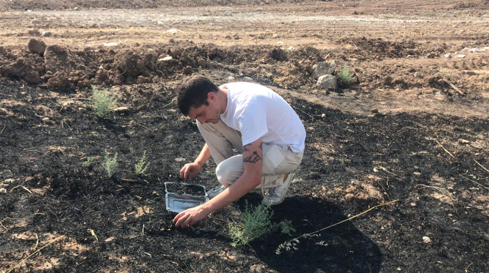

Anish Kapoor, Scorched Earth (2020). Courtesy of the artist and Migrate Art.
Rachel Whiteread and 13 Other Art Stars Are Selling Work Made From the Scorched Fields of Iraq to Benefit Refugees
The ashes were smuggled out of Iraq by charity workers.
Caroline Goldstein, September 3, 2020
For months now, tens of thousands of acres of arable land in Iraq have been turned to charred wastelands, ruining the crops that farmers rely on to make a living.
Despite some early Iraqi government reports indicating that the fires stemmed from natural occurrences and accidents, members of the ISIS terrorist group claimed responsibility for at least a portion of the damage.
Now, a group of 14 international artists are coming together for an exhibition and charity auction organized by the UK-based organization Migrate Art to lend a hand.
The show and sale, titled “Scorched Earth,” stem from a visit that Migrate Art reps made in 2019 to Iraqi refugee camps, during which they saw the acres of ruined fields. The team gathered ashes from the sites and smuggled them out of the country in tea tins.

Paint being created using ash taken from burnt crop fields in Iraq.
Image courtesy Migrate Art and Jackson’s Art Supplies.
Upon returning to London, they partnered with Jackson’s Art Supplies to create a paint infused with ash-pigment, which artists have used to create the works in the sale.
From September 19 to 27, works by artists including Anish Kapoor, Loie Hollowell, Mona Hatoum, Rachel Whiteread, and Raqib Shaw will be on display at Cork Street Galleries in Mayfair, and later auctioned as part of Christie’s Postwar and contemporary art day sale in October.
Street artist Shepard Fairey also designed two screen prints using ash-pigmented ink featuring an image of doves. The works will be for sale for £650 each from Migrate Art.

Simon Butler, founder of Migrate Art, collecting ash in Iraqi Kurdistan, 2019. Image courtesy Migrate Art.
In 2019, Migrate Art tapped acclaimed artists to use the raw materials of another disaster to raise funds for charities. The project, “Multicolour,” tasked artists with incorporating crayons salvaged from the remains of the Calais Jungle refugee camp that was razed in 2016 into their work.
All of the proceeds from “Scorched Earth” will be split among three charities: RefuAid, Refugee Community Kitchen, and the Lotus Flower.
“Scorched Earth” will be on view at Cork Street Galleries from September 19–27, 2020; Christie’s Postwar and Contemporary Day Sale in London is on October 23, and the auction preview runs from October 6–22.
SOURCE: ARTNET NEWS